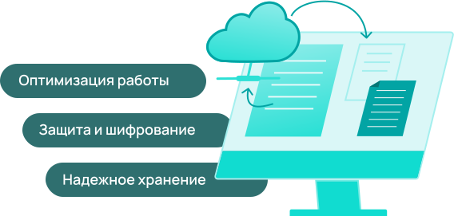

Электронный
документооборот

@@include('components/bem-blocks/_button.html',{
"color": "cian",
"text": "Подключить"
})
Электронный документооборот — это система, позволяющая перевести документы в цифровой формат и управлять ими удаленно. Принцип работы ЭДО не отличается от традиционного: документы составляются, подписываются сначала одной стороной, затем другой. Разница заключается лишь в том, что весь процесс происходит онлайн, а подпись от руки заменяется цифровой подписью. При этом переводить подписанный документ в бумажный формат необходимости нет, так как каждый контрагент в любое время сможет скачать его из архива сервиса.
Преимущества ЭДО

Исключение «человеческого фактора»
Электронные документы не могут затеряться, сгореть или порваться, как бумажные, так как сохраняются на серверах системы в виде архива. При желании их в любое время можно найти по названию или дате подписания.
Оптимизация работы организации
Сервис ЭДО позволяет отслеживать все действия, совершенные с документом, а также своевременно подписывать договора с контрагентами, заказчиками и клиентами, что значительно ускоряет все рабочие процессы в компании.
Защита от ошибок и несанкционированного использования
Умная программа не позволит, например, неправильно поставить дату. Также она не допустит к подписанию документов неуполномоченных лиц. Электронный документооборот шифрует файлы, чтобы они не могли использоваться в мошеннических целях.
Также подчеркнем, что цифровые документы официальны. То есть, они аналогичны бумажным и имеют такую же юридическую силу. Зато времени и ресурсов на их подписание потребуется меньше. Ведь электронному документу не нужно «гулять» по отделам, чтобы собирать подписи.
Как ЭДО Диадок улучшит качество работы компании
Одним из ведущих лидеров рынка стал сервис электронного документооборота Диадок. Его основное преимущество заключается в том, что он позволяет создавать интеграционные решения с большинством существующих учетных систем и подключаться к любой информационной системе.
Диадок позволяет:
Передавать налоговые декларации, товарные накладные и счета, подписывать договоры, акты сверки платежные поручения.
Документы контрагентам доставляются мгновенно, а узнать дальнейшие действия, связанные с ними, поможет статус.
Помимо этого, в Диадоке предусмотрен интеграционный модуль для 1С, что дает возможность обмениваться документацией с заказчиками, клиентами, партнерами непосредственно из этой программы без выхода в стороннее приложение.
Diadoc — умный сервис, в котором, помимо прочего, предусмотрена система маршрутизации, направляющая входящие документы сразу в нужное подразделение организации.
Также Диадок позволяет отправлять и получать документацию от контрагентов, пользующихся другими системами ЭДО. Одновременно можно работать с большим объемом документов.
Diadoc — умный сервис, в котором, помимо прочего, предусмотрена система маршрутизации, направляющая входящие документы сразу в нужное подразделение организации. Также Диадок позволяет отправлять и получать документацию от контрагентов, пользующихся другими системами ЭДО. Одновременно можно работать с большим объемом документов.
Часто задаваемые вопросы
Отвечаем на все